32 / 100 — 공포
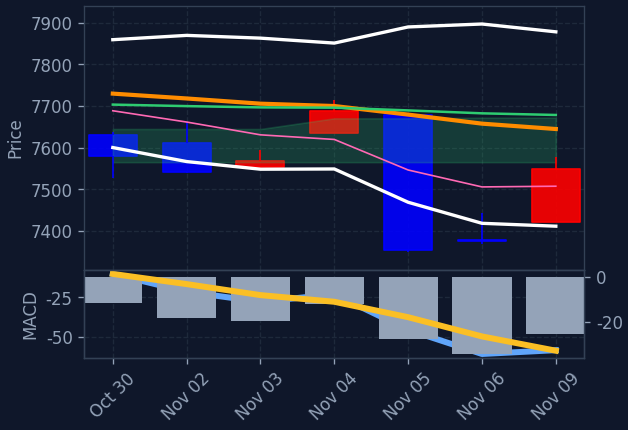
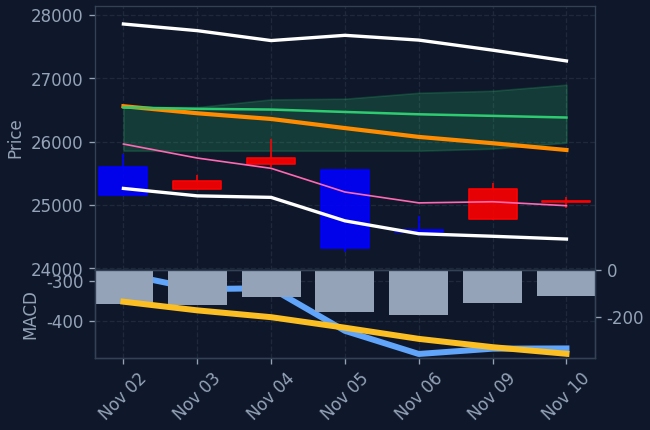
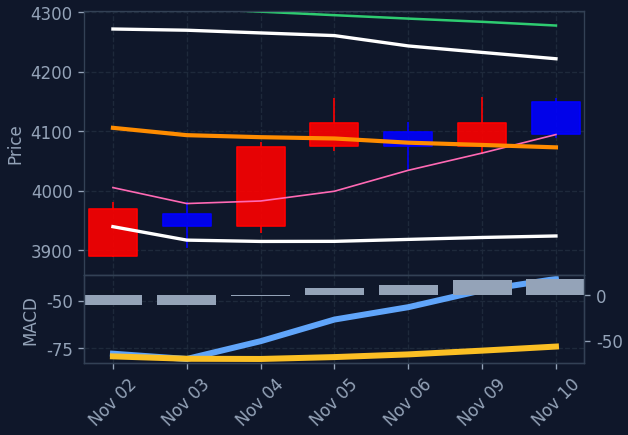
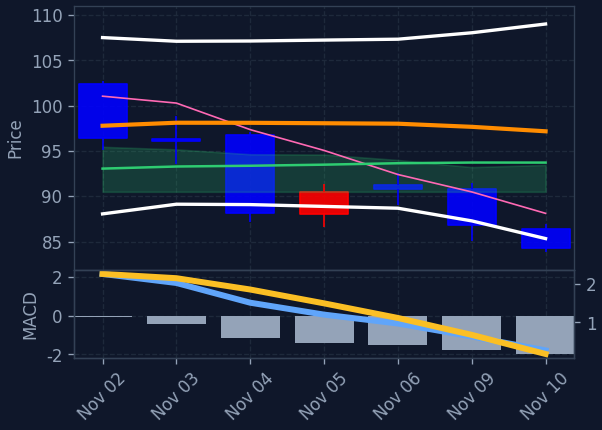
현재 미국 증시 프리장은 핵심 인플레이션 데이터 발표를 앞두고 관망세가 형성된 가운데 S&P500 선물(+0.03%)과 나스닥 선물(+0.11%)이 소폭 상승하며 혼조세를 보이고 있습니다. 엔비디아(+1.82%) 등 일부 빅테크 종목과 2차전지/리튬(+0.72%), 헬스케어/바이오(+0.44%) 섹터가 강세를 주도하고 있습니다. 직전 정규장에서 다우(+2.15%)와 필라델피아 반도체 지수(+6.85%)가 급등한 후 주요 지표 경계감으로 숨고르기가 진행되는 흐름입니다.
직전 정규장은 아시아 증시의 반도체 반등과 유가 하락이 심리를 개선시켰으나, 프리장에서는 미 물가 지표 발표를 앞두고 신중한 움직임이 나타나고 있습니다. 엔비디아(+1.82%), 알파벳(+0.71%), 메타(+0.66%) 등은 상승세를 이어가는 반면 마이크로소프트(-0.78%)와 넷플릭스(-0.59%), 애플(-0.41%)은 약세를 보이고 있습니다. 또한 WTI 유가가 3.40% 급락한 $83.9를 기록하면서 에너지(-0.93%) 섹터의 하락폭이 크게 나타나고 있습니다.
프리장 테마 흐름은 2차전지/리튬(+0.72%), 헬스케어/바이오(+0.44%), 기술/IT(+0.28%) 섹터가 상승세를 보이는 반면 에너지(-0.93%), 태양광/신재생(-0.82%), 방산/우주항공(-0.43%)은 약세를 나타내고 있습니다. 아시아 증시에서 한국 반도체 종목 급등과 국제 유가 하락이 투자 심리를 받쳤던 맥락 속에서 엔비디아(+1.82%) 등 핵심 기술주로 매수세가 집중되는 모습입니다. 프리장 엔비디아의 강세와 아시아 반도체 반등 흐름은 한국 반도체 대형주에 긍정적인 모멘텀을 제공할 것으로 기대됩니다.
📊 나스닥 선물 +0.11%
📊 S&P500 선물 +0.03%
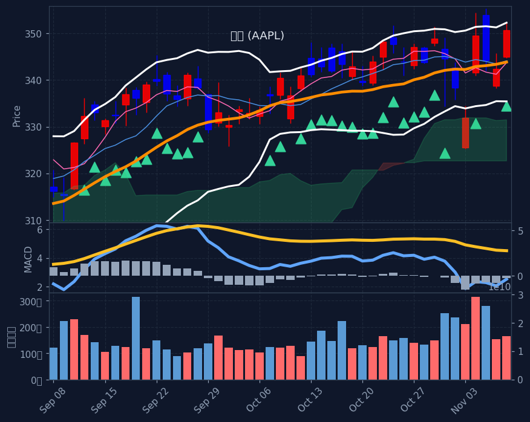
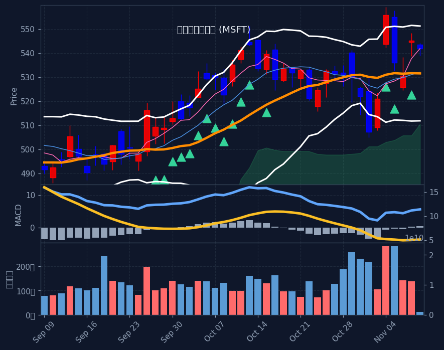
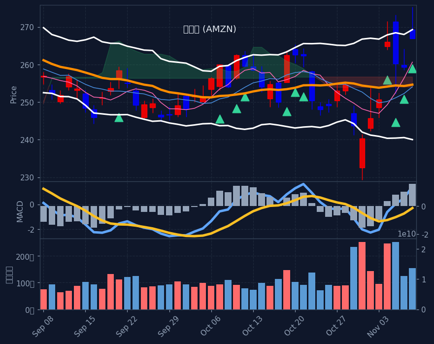
※ S&P500 대상 A/B/C/D 전략별 분류(각 칸 거래대금순). 한 종목이 여러 전략에 잡히면 각 칸에 중복 표기. 백테스트상 기계적 엣지는 약하며 매수 추천이 아닙니다. 판단·책임은 본인.
📅 결제일 11/3~11/9(5거래일) 기준 · 오늘 11/10 기준 약 1일 전 데이터 · T+2 결제 기준(실제 매매는 약 2거래일 전)
💸 한국인 순매수 일평균: +8,764억 (전주 +4,723억 대비 +85.5%) · 5일 총액 +43,818억
※ 예탁결제원(SEIBro) 최근 5거래일 한국인 순매수/순매도 결제금액(T+2) · 11/3~11/9 결제 기준(실제 매매는 약 2거래일 전). 자금이 어디로 유입·유출되는지 참고용.
※ 투매 바닥(RSI≤30+50선이격+거래량폭증)에서 반등 시작 포착, 4시간봉 RSI도 과매도. 🔥는 지수(나스닥/S&P·코스피)도 RSI<35 동반 바닥(강신호). 떨어지는 칼날 위험 — 매수 추천 아님, 판단·책임 본인.
※ 급등 초입(추세확인보다 빠른 돌파 진입) 참고용. 백테스트 표본 적고 상승장 기준 — 가짜 신호·되돌림 위험, 매수 추천 아님.
※ 60일선까지 눌렸다 지지받고 마감한 종목(참고 태그). 백테스트상 다음날 반등 엣지 없음(승률 48~49%·생존편향 포함) 확인됨 — 매수 추천·시그널 아님, 종합점수/Top3에도 미반영. 단순 참고용.
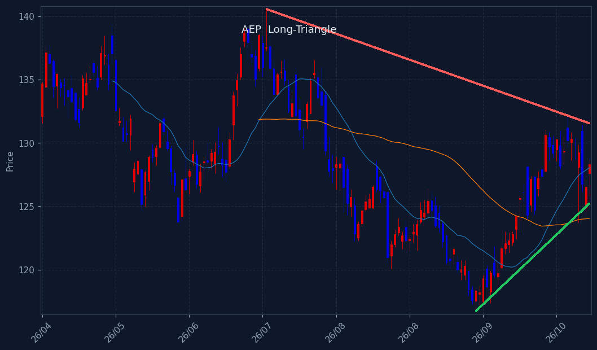
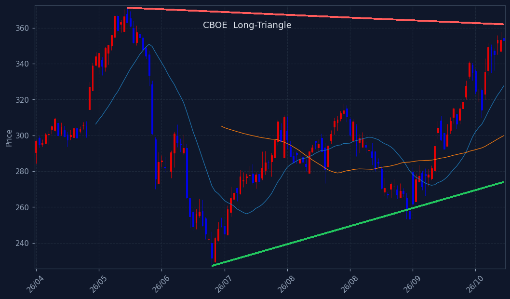
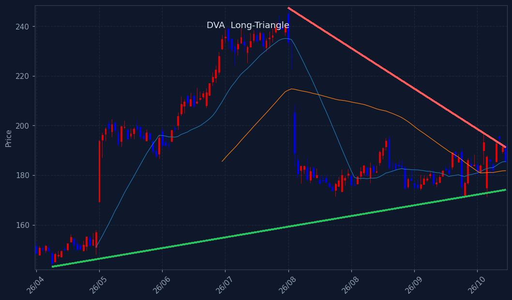
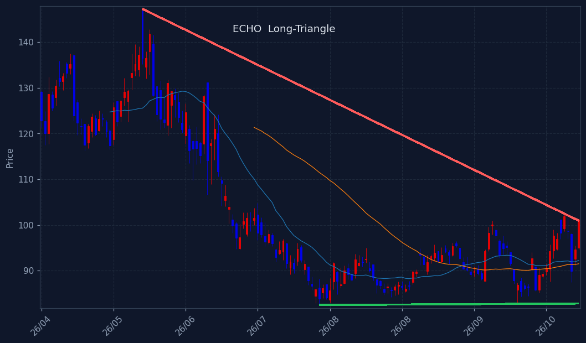
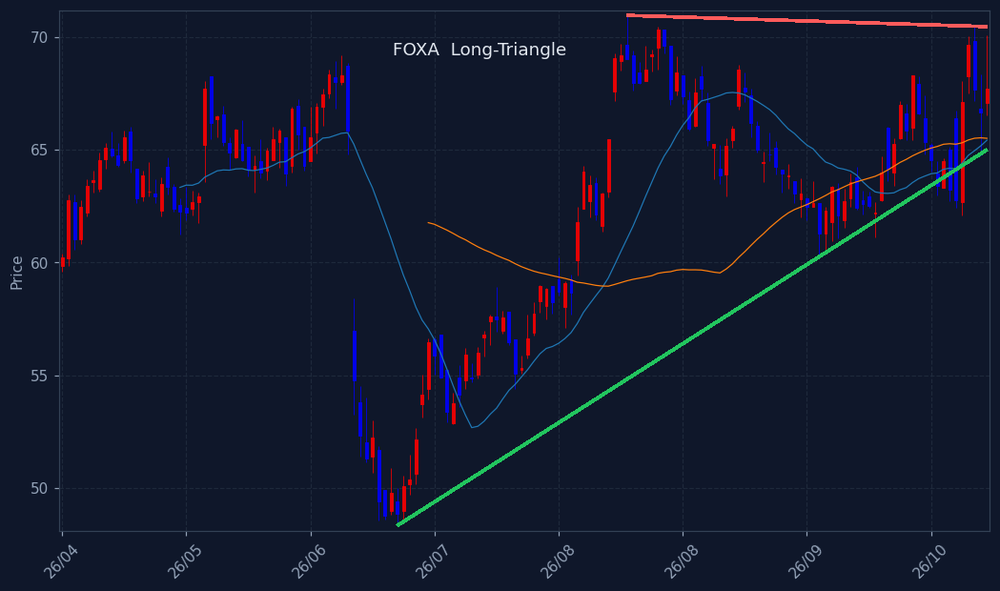
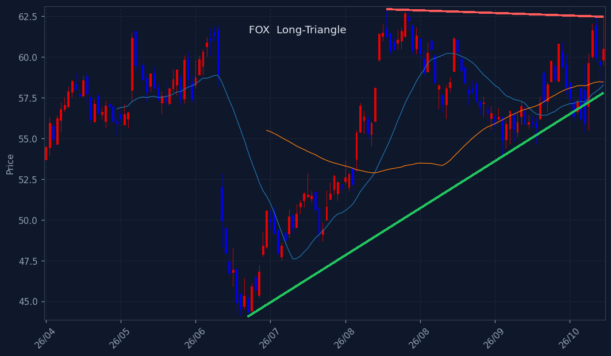
※ 삼각수렴 돌파 임박 종목. 📐장기 삼각수렴(수개월 대형 삼각형, 볼록껍질 추세선+실수축) = 백테스트 491건 승률 66%·평균 +8.7%/20일로 엣지 확인(HOOD·TSLA류 대박 초입). 단기 코일 = 엣지 약함(승률 ~60% 베타 수준). 🔻대칭=고점↓·저점↑ / 🟰바닥지지=저점 평평. 매수추천 아님·종합점수/Top3 미반영(관찰용).